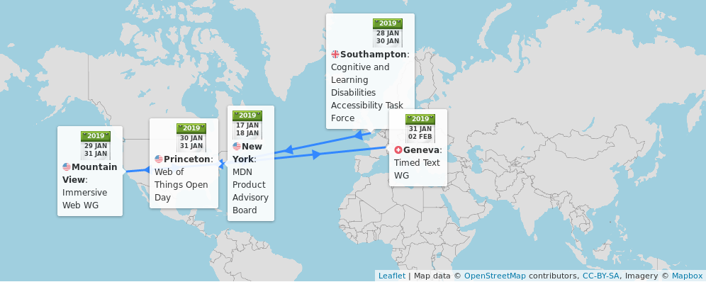
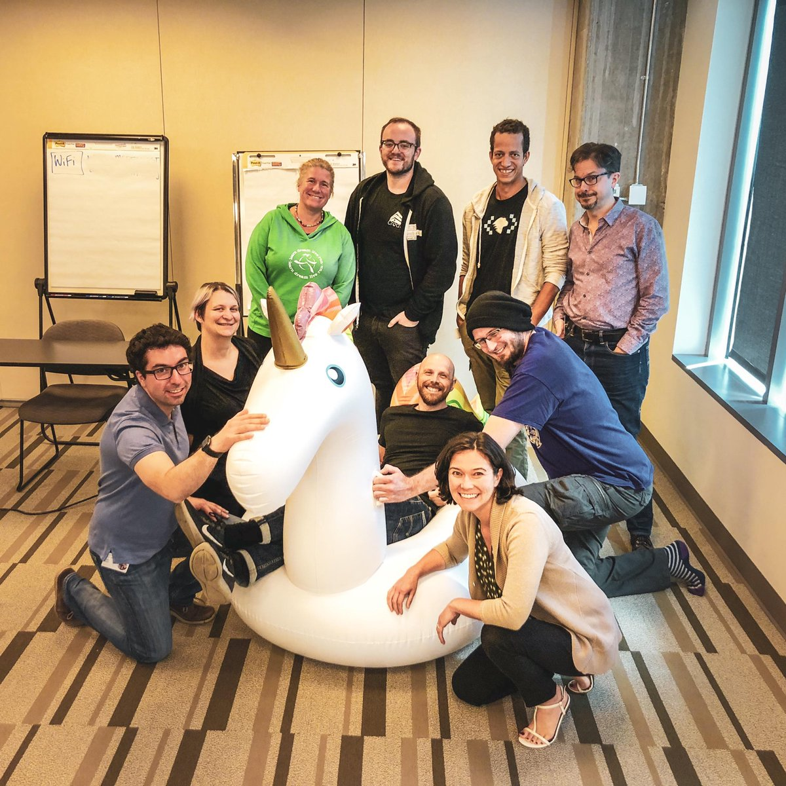

8 Jan: New session of @w3cx introductory #HTML5 #CSS course. Enroll now and join an enthusiastic group of students from all over the world! https://www.edx.org/course/html5-and-css-fundamentals-2 @MicrosoftEDU @edXOnline @codeprompt
🗓️ January@w3c: Happy new year!, @w3cx course, #f2fmeetings, etc. https://www.w3.org/participate/eventscal.html
https://twitter.com/w3cdevs/status/108230681528155751017-18 Jan: @dontcallmeDOM attends the @MDN product Advisory Board #f2fmeeting in #NYC 🇺🇸
https://twitter.com/w3cdevs/status/108230681890118451229-30 Jan: The #WebXR #WorkingGroup meets at @samsung in #MountainView 🇺🇸 https://www.w3.org/immersive-web/
https://twitter.com/w3cdevs/status/108230682476483788828 Jan-2 Feb: The @w3c Web of Things meetings take place @SiemensWoT, in #Princeton 🇺🇸. The #plugfest, 28-30 Jan., is open to all implementers and the Open Day is scheduled for 30 Jan. Full details at: https://www.w3.org/WoT/IG/wiki/F2F_meeting,_28_January-2_February_2019,_Princeton,_NJ,_US
https://twitter.com/w3cdevs/status/108230682318776729628-29 Jan: The @wai Cognitive and Learning Disabilities Accessibility Task Force meets in #Southampton 🇬🇧, #a11y #accessibility. Meeting hosted by @unisouthampton and supported by @W3CUKI : https://www.w3.org/WAI/PF/cognitive-a11y-tf/wiki/Meetings/Jan_2019
https://twitter.com/w3cdevs/status/108230682184139980831 Jan-1 Feb: The Timed Text #WorkingGroup #f2fmeeting is hosted by @EBU_HQ in #Geneva🇨🇭: https://www.w3.org/wiki/TimedText/F2F-jan-2019
https://twitter.com/w3cdevs/status/1082306825947701248The winter edition of the #roadmap of #WebApps on mobile is out! It highlights exploratory work of the @w3c @wicg_ to close the gap with native: https://www.w3.org/2018/12/web-roadmaps/mobile/ #January2019 -- thanks to @tidoust @XueFuqiao @W3CChina @Beihang1952 https://twitter.com/w3c/status/1082169101991198720
For example, native apps can display badges next to their icon to notify users about incoming events, pending messages, etc. Soon doable in Web apps too? Check the Badging #API in the #roadmap: https://www.w3.org/2018/12/web-roadmaps/mobile/lifecycle.html#badging
https://twitter.com/ChromiumDev/status/1073621458235080704
https://twitter.com/w3cdevs/status/1082574076642816001Also, soon a good way to avoid janks while updating the DOM? Lock an element and its subtree with Display Locking: https://www.w3.org/2018/12/web-roadmaps/mobile/performance.html#display-locking
https://twitter.com/w3cdevs/status/1024048594955849728
https://twitter.com/w3cdevs/status/1082574080832929793The #roadmap of #WebApps on mobile project is part of a set of roadmaps under development on #github: https://github.com/w3c/web-roadmaps/. The #webdev community is encouraged to review them and raise comments, or suggest new ones, in the repository’s issue tracker https://github.com/w3c/web-roadmaps/issues/
https://twitter.com/w3cdevs/status/1082574082967826432👏👏👏
For background on this @tag election and the candidates, see https://twitter.com/w3cdevs/status/1069947401056804864 https://twitter.com/w3ctag/status/1082600332528701440
https://twitter.com/w3cdevs/status/108261541212943564822 Jan: @dontcallmeDOM introduces the #WebAuthn #API at the @dev_var event in #Toulon, 🇫🇷 https://devvar.org/devvar23.html
https://twitter.com/dev_var/status/1082932562476089344
https://twitter.com/w3cdevs/status/1084863187370033152As a reminder, #WebAssembly started in 2018 its path on the @w3c standardization track
https://twitter.com/w3cdevs/status/964131886716112898
In the past couple of years, #WebAssembly has already changed the way #apps get built and deployed on the Web. In this video, @luke_wagner tells us what new tricks #WebAssembly has up its leeves #wasm https://vimeo.com/311391518
https://twitter.com/w3cdevs/status/1085183152597790729It has been opening new roads in terms of what needs to be provided by native browser code vs shipped by app #developers. Most recently, @tsahil reported on its possible impact on #WebRTC for e.g. codec distribution
https://twitter.com/tsahil/status/1084798159187050496
https://twitter.com/w3cdevs/status/1085183155131187201Thanks to @luke_wagner for taking the time at #w3ctpac2018 to do this short and sweet summary of what's next for #WebAssembly
https://vimeo.com/311391518 #Lyon #October2018
https://twitter.com/w3cdevs/status/1085183160705462274#WebAssembly is also expected to play a role in the server-side world: as a universal bytecode, it provides tantalizing opportunities for deploying #CloudServices
https://twitter.com/antweiss/status/1061844542746492928
https://twitter.com/w3cdevs/status/1085183158532812801For a deeper dive, go read this @mozhacks article by @linclark, @tschneidereit and @luke_wagner on the future of Web Assembly: https://twitter.com/linclark/status/1054395364898414599
https://twitter.com/w3cdevs/status/1085183163280678914Thanks to @webcastors for shooting the video during the #meetup https://www.w3.org/2018/10/Meetup/. And thanks to Qihoo 360 Technology Co Ltd. for creating the English transcripts and Chinese subtitles.
Did you miss the @w3c devmeetup in Lyon in 2018? Now is a good time to catch up! #w3cdevs2018
Our first speaker, Rachel Andrew @rachelandrew, presented "The new #CSS layout", and here is the video: https://vimeo.com/303217091
https://twitter.com/w3cdevs/status/1086241841069150208MDN Changelog – Looking back at 2018 – Mozilla Hacks - the Web developer blog https://hacks.mozilla.org/2019/01/mdn-changelog-looking-back-at-2018 via @mozhacks
https://twitter.com/w3cdevs/status/1087369147506401281If you need a refresher on the #ImmersiveWeb Working Group, check out https://www.w3.org/immersive-web/
https://twitter.com/w3cdevs/status/1052192601334398976
.@w3c launched a couple of months ago the #ImmersiveWeb #WorkingGroup to enable Augmented and Virtual reality (#XR) on the Web. In this short first video, @Lady_Ada_King explains why Web & XR are a match made in heaven: https://vimeo.com/311185799
https://twitter.com/w3cdevs/status/1087765248495550464All participants are working hard toward the First Public Working Draft of #WebXR! https://twitter.com/NellWaliczek/status/1087514609941078016
https://twitter.com/w3cdevs/status/1087765253851615232Their next #f2fmeeting is next week in #MountainView, 🇺🇸 #VR #VirtualReality #AR #XR #Web
https://twitter.com/w3cdevs/status/1082306824764837888
https://twitter.com/w3cdevs/status/1087765251112779776Thanks @Lady_Ada_King for taking the time at #w3ctpac2018 to immerse us in the future of #XR on the Web, and thanks @webcastors for shooting it https://vimeo.com/311185799 #Lyon #October2018
https://twitter.com/w3cdevs/status/1087765256846348289Stay tuned for the two other videos where @Lady_Ada_King explains the path from #WebVR to the new #WebXR goodness https://github.com/immersive-web/webxr/
https://twitter.com/w3cdevs/status/1087765255269351424https://twitter.com/dontcallmeDOM/status/1087774998402605060
https://twitter.com/w3cdevs/status/1088028483870167040This serves as a nice complement to @rachelandrew's talk on "The new #CSS layout" that we released last week https://twitter.com/w3cdevs/status/1086241839529758720
If you missed the @w3c #devmeetup #w3cdevs2018 in #Lyon last October, we have another video for you today with @regocas explaining how to contribute to the development of the #CSS specifications that style the #Web: https://vimeo.com/312474183
https://twitter.com/w3cdevs/status/1088100516838719489Thanks again to @webcastors for shooting the video during the #meetup https://www.w3.org/2018/10/Meetup/ and to @QIHU_Official for creating the English transcripts and Chinese subtitles.
https://twitter.com/w3cdevs/status/1088100518172524549This is the 2nd part of a 3-part series of video introducing the #ImmersiveWeb and #WebXR - the first part of the series published last week described the vision behind the Immersive Web https://twitter.com/w3cdevs/status/1087765246255788032
The Web is already being used as a platform to distribute VR content - @Lady_Ada_King shared with us some examples of what #WebVR has enabled on the Web in this short video
https://vimeo.com/313371286
https://twitter.com/w3cdevs/status/1090307690037956609The #ImmersiveWeb Working Group is just starting its face-to-face meeting in #MountainView 🇺🇸 https://twitter.com/w3cdevs/status/1087765251112779776
https://twitter.com/w3cdevs/status/1090307692340670464Stay tuned for the last part of this series which explains why we're moving from #WebVR to #WebXR.
https://twitter.com/w3cdevs/status/1090307695482163200